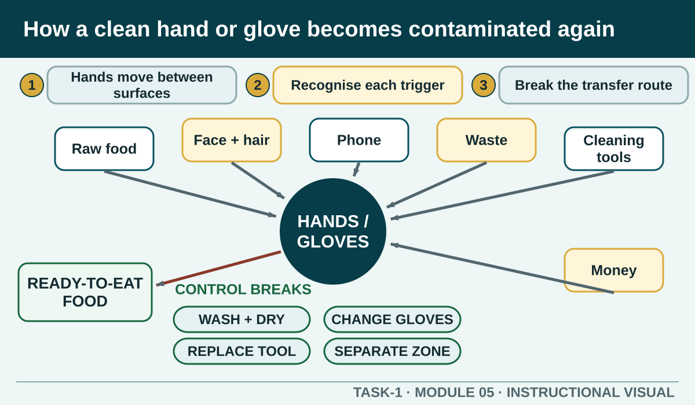
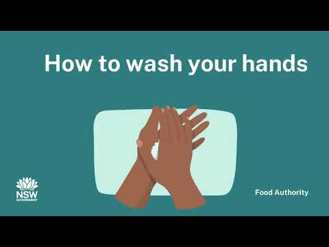

Prior learning
Recall the previous lesson and bring forward one question or completed learning artefact.
Task 1 · Lesson 5 of 16
Trace contamination through hands, gloves and high-touch surfaces, recognise handwashing triggers and restore a clean ready-to-eat workflow after contact changes.
Prior learning
Recall the previous lesson and bring forward one question or completed learning artefact.
Success criteria
Learning boundary
This lesson supports preparation and formative practice. The current authorised package and trainer/assessor control formal products, observations, dates and submission.
Hands connect ingredients, utensils, handles, taps, cloths, waste, phones, the face and finished food. Each touch can carry contamination from a source to a new surface. A worker must think about the contact history of their hands, not only whether they look clean.
Use the pattern source, route and destination. Raw food may be the source, hands or gloves the route, and ready-to-eat food the destination. Handwashing, clean equipment and separated work zones break the route before it reaches the food.
Handwashing is required before food handling and whenever hands may have become contaminated. Common triggers include the toilet, raw food, waste, cleaning, money, a phone, coughing or sneezing, and touching the face, hair, clothing or an unclean surface. A change from raw to ready-to-eat work is a critical reset point.
The strongest response occurs before the next handle, utensil or ingredient is touched. If a worker recognises the trigger only after contact, stop and protect the affected item, reset hands and equipment and report possible food exposure when required.
Hands can move contamination from the body, raw food, waste, money, cleaning tasks, phones, door handles or one food-contact surface to another. Wash at the designated hand basin using the authorised handwashing method, clean all hand surfaces, rinse and dry using the approved method.
Wash before food handling and whenever contamination may have occurred, including after using the toilet, touching the face or hair, coughing or sneezing, handling raw food, removing waste, cleaning, handling money or changing to a ready-to-eat task. The trigger matters as much as the technique: clean hands can become contaminated again immediately.
Single-use gloves do not replace handwashing. Hands must be prepared as directed before gloves are put on, and gloves must be changed when contaminated, damaged or moved between incompatible tasks. Touching a phone, face, bin or raw food can contaminate a glove just as it can contaminate a bare hand.
Avoid treating gloves as proof that a task is hygienic. Check what the glove has touched, whether it is suitable for the task and whether the change of activity requires a fresh pair or a different control.
If hands or gloves touch the face, hair, phone, waste, dirty cloth or another contamination source, stop the food task. Remove or replace contaminated single-use items, wash and dry hands using the authorised method and restore clean equipment and the protected zone before continuing.
Think beyond the hand. A contaminated hand may already have touched a knife handle, tap, container or board. Identify and reset each contacted surface through the authorised cleaning or replacement method rather than washing hands and leaving the rest of the route active.
Use the designated handwashing basin and keep it available for hands rather than food, equipment or dirty cloths. Follow the authorised soap, water, technique, rinse and drying method. Complete every hand surface and dry thoroughly because wet hands can spread contamination readily.
Avoid recontaminating clean hands on the tap, dispenser, door or apron. Use the workplace method for these touchpoints and move directly into the prepared clean task. If supplies are missing or the basin is unavailable, report the failed facility control instead of substituting an unsuitable sink.
Phone view: swipe across the diagram, or use Open larger below.


External media loads only after you choose it.
Source-linked video
Watch for: Track the complete handwashing sequence and identify the surfaces of the hands that must not be missed. Then separate the general public guidance from the local handwashing procedure demonstrated by the teacher.
Formative practice
Each option explains the workplace consequence. These responses save on this device.
Written application
Use observable facts, explain the consequence and keep local assessment or procedure details with the authorised source.
Self-checkApply and keep evidence
Order a complete handwashing process and connect each step to contamination control.
Use the check result, activity record and written response as formative learning evidence only. Formal evidence remains controlled by the current package and trainer/assessor.
Next: Food-handler health.
Authorised source note: Source basis: authorised Cycle 1 handwashing and contamination-route content, supported by current NSW Food Authority food-handler guidance. Exact basin, product, drying and local handwashing procedure remain Teacher to confirm.